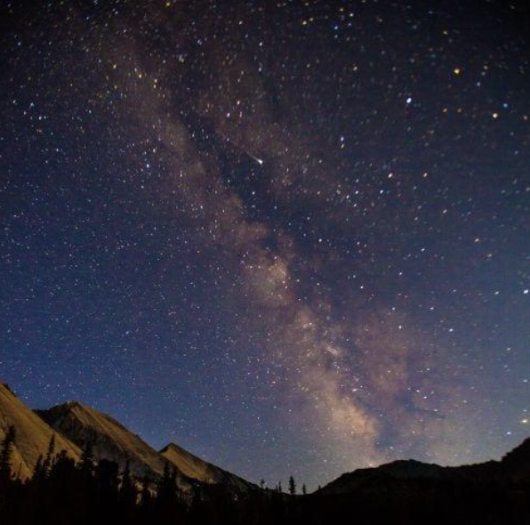
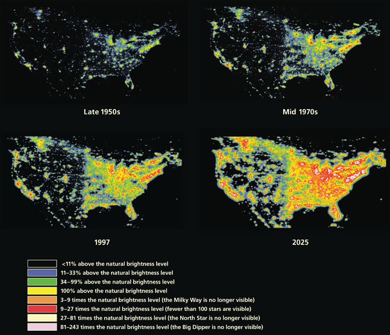
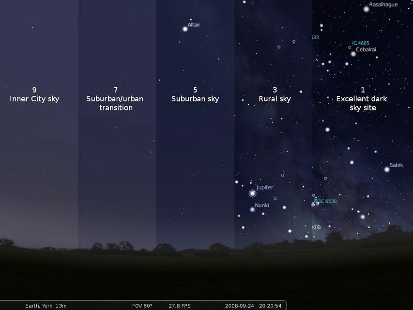
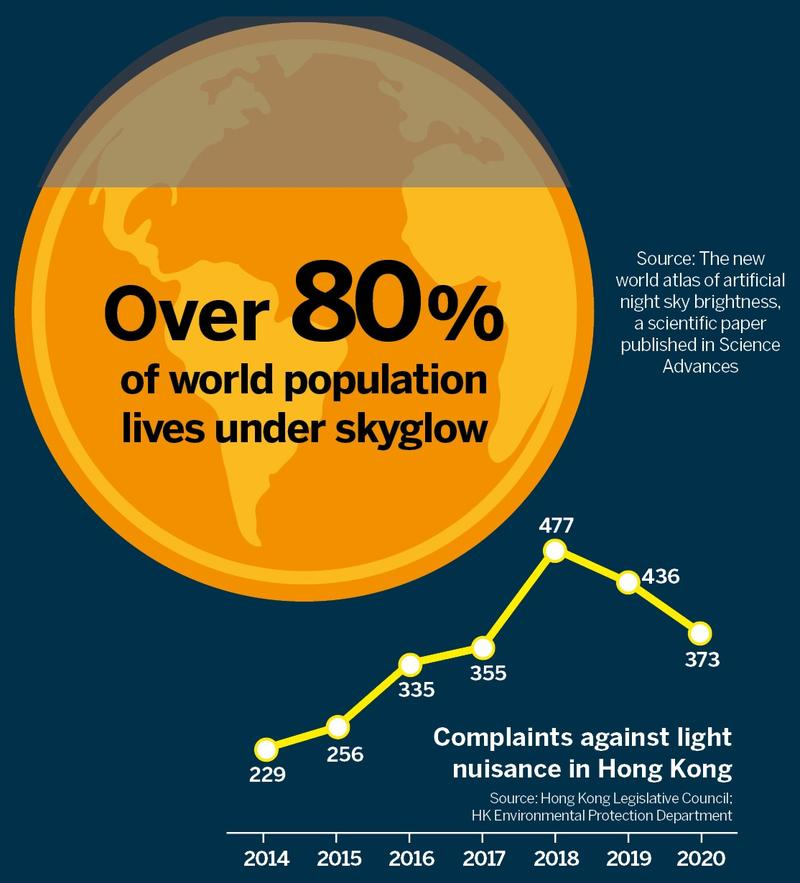
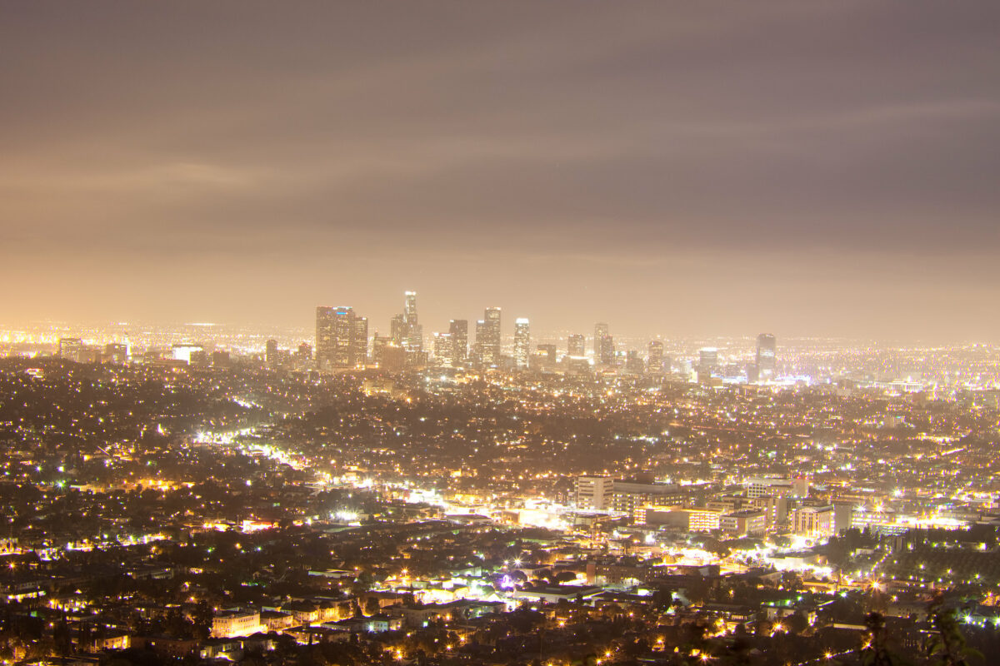
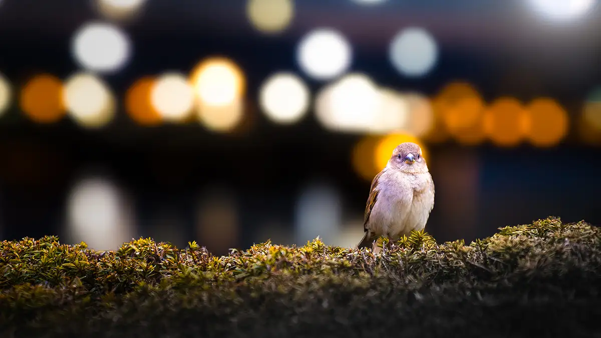
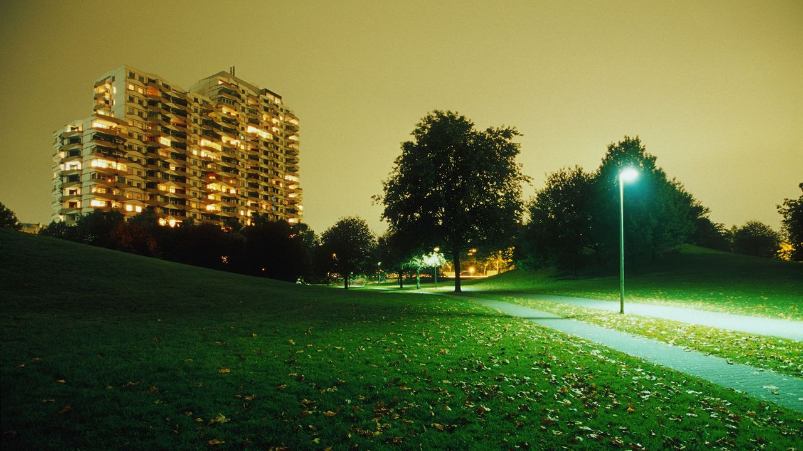

Light pollution is the overuse of artificial light hat brightens the night
sky, reducing our ability to see stars and disrupting natural ecosystems.
It affects wildlife by interfering with migration patterns, sleep cycles,
and predator-prey relationships, especially for nocturnal animals. Humans
also experience negative effects, such as disrupted sleep due to exposure
to artificial light at night, which can impact overall health. By using
shielded lighting, reducing unnecessary brightness, and promoting awareness,
we can help restore the natural beauty of the night sky while protecting
Light Pollution
A Starless Sky
Learn more about light pollution and its impacts on the environment,
our health, and more.
Remember: Dim the lights, save the night!

What is Light Pollution?
Light pollution is the overuse of artificial light hat brightens the night
sky, reducing our ability to see stars and disrupting natural ecosystems.
It affects wildlife by interfering with migration patterns, sleep cycles,
and predator-prey relationships, especially for nocturnal animals.
Humans
also experience negative effects, such as disrupted sleep due to exposure
to artificial light at night, which can impact overall health. By using
shielded lighting, reducing unnecessary brightness, and promoting awareness,
we can help restore the natural beauty of the night sky while protecting
both wildlife and human well-being.
Causes of light pollution:
Glare
Uncomfortably bright lights that directly shine into the eye
Light Trespass
Unintended light that spills into other people's spaces
Skyglow
Light scattered into the atmosphere that brightens the night sky
Light Clutter
Excessive or confusing groupings of light sources
Let's look at the facts...

Levels of light pollution in the U.S. have increased rapidly over the years

Starlight is greatly diminished, even in rural and suburban areas, impacting both people and wildlife

Light pollution is a global problem that requires a global solution

LA's night sky is a prime example of light pollution
Impact!
Lasting Effects of Light Pollution on Wildlife
Disrupted Sleep and Circadian Rhythms
Artificial light can disrupt the natural day-night cycle, which
affects when animals sleep, wake, migrate, and reproduce.
Birds that use moonlight to migrate may get lost and die.
Disorientation and Poor Navigation
Light pollution can confuse animals' navigation, making it harder
for them to find food, shelter, and mates.
Sea turtle hatchlings may be drawn to bright lights from roads
and houses instead of the ocean, where they need to go to survive.
Attraction to Artificial Lights
Many insects are attracted to artificial light, which can lead to them being
killed by light sources or becoming prey for predators.
Billions of moths and other nocturnal insects are killed each year by artificial light.
Reduced Survival and Reproduction
Light pollution can lead to reduced survival and reproduction in many species.
By affecting the behavior of predators and prey, light pollution can alter food webs.

Lasting Effects of Light Pollution on Ecosystems
Impacts on Predation & Reproduction
Light pollution can attract prey species to areas with artificial light,
making them more vulnerable to predators.
Disrupted circadian rhythms can negatively affect reproductive success
by altering hormone cycles and timing of breeding activities.
Impacts on Plant Life
Artificial light at night can trick plants into thinking it's daytime, causing
them to bud and flower earlier in the spring, potentially leading to issues with
frost damage and impacting the timing of pollination.
Many nocturnal pollinators like moths and bats are disoriented by artificial light,
leading to decreased pollination of night-blooming flowers and decreased seed dispersal.
Continuous exposure to artificial light can cause stress on plant systems, impacting their
photosynthetic efficiency and overall growth.
Impacts on Habitat Loss
Some animals actively avoid illuminated areas, effectively excluding them from potential habitat.
Nocturnal rodents such as some species of mice and shrews may avoid
brightly lit areas, reducing their access to food and shelter.
When animals avoid lit areas, it can effectively create barriers within their natural
range, dividing their habitat into smaller, less viable sections.

Lasting Effects of Light Pollution on Humans
Melatonin Disruption & Sleep Problems
Exposure to artificial light at night, especially in the blue light spectrum,
inhibits the body's natural production of melatonin, a hormone crucial for sleep regulation.
Reduced melatonin levels due to light pollution can lead to difficulty falling asleep,
disrupted sleep patterns, and reduced sleep quality.
Circadian Rhythm Disruption
Light pollution disrupts the body's natural circadian rhythm, which is synchronized
with day and night cycles, potentially impacting various bodily functions beyond sleep.
A disrupted circadian rhythm can impact hormone regulation— increasing
the risk of diseases— as well as mental health and metabolism, potentially leading to obesity.
Potential Health Concerns
Studies have linked chronic light pollution exposure to potential health issues like
increased risk of depression, obesity, diabetes, cardiovascular disease, reproductive problems
and cancers.
Moreover, numerous studies have linked working the night shift and exposure to light at night to
increased risks for breast and prostate cancers and other health problems.
Want to learn more about reducing light pollution and protect our night skies?
Fill out the form below! By taking action, you can help preserve natural darkness,
support wildlife,and improve human health. Every small change, from using shielded
lighting to advocating for better policies, makes a difference. Together, we can
restore the beauty of the night sky for future generations.